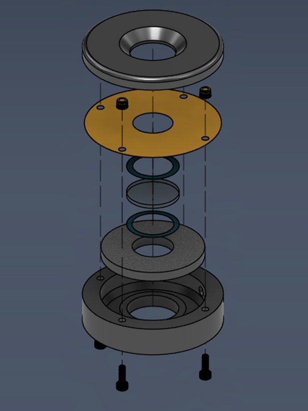
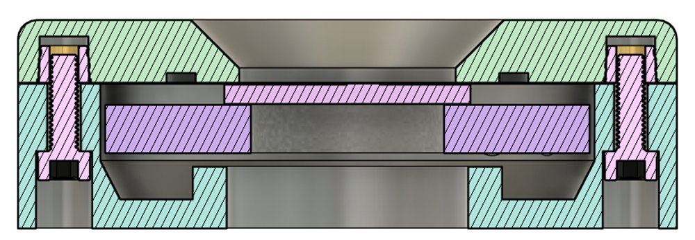
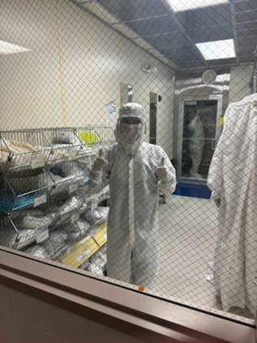
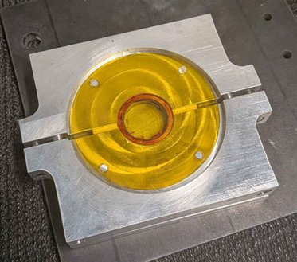
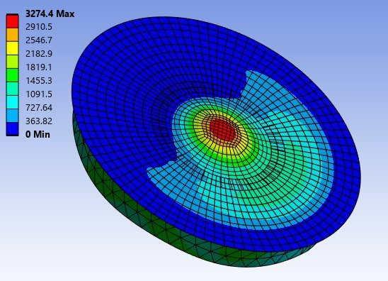
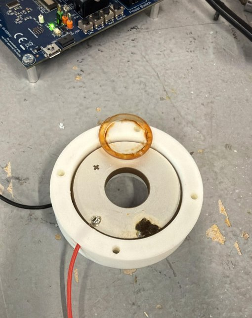

Ultrasonic Lens Cleaning System
A proof-of-concept laparoscope attachment that uses a piezoelectric ring to vibrate a lens cover at ultrasonic frequencies, atomizing fluid off the lens without removing the scope from the patient.

Problem / Goal
During laparoscopic surgery, blood, fog, and tissue regularly cover the camera lens. Clearing it usually means pulling the scope out, wiping it, and reinserting it, which takes about 30 seconds each time. That adds up to several percent of total operating time, and it can be dangerous when every second counts.
Our sponsor has a patent-pending concept that cleans the lens in place by vibrating it ultrasonically. The previous semester's team couldn't get the lens to vibrate meaningfully, so we redesigned the system from scratch. The goal was an upsized proof-of-concept prototype (before scaling down to fit a laparoscope) that could atomize fluid off the lens.
My Role
I owned the mechanical design and CAD, and supported the simulation and testing, which were led by a teammate. I also did most of the material sizing and selection, etched the lens in the cleanroom, and did most of the prep work and assembly.
Design Process
- Lens sizing. To get large vibrations, the lens's natural frequency has to match the piezo's resonant frequency (33 kHz). I modeled the lens as a clamped circular plate using Kirchhoff–Love plate theory, took the clamped-edge eigenvalue from published plate vibration data, and solved for the thickness that put the lens's first mode at 33 kHz. The result was 1.94 mm for a 25.4 mm lens, so we used an off-the-shelf 2 mm window.
- Material selection. I chose fused silica for the lens cover using a Pugh matrix against a standard borosilicate optical glass. Fused silica has very low internal damping, so more of the piezo's energy becomes lens motion instead of heat. It also has very low thermal expansion to tolerate heating from vibration, and it's compatible with the hydrophobic coating the sponsor uses. For the adhesive I picked EPO-TEK 353ND, a stiff epoxy (to keep damping at the bond low) that also comes in a medical-grade version.
- Housing and suspension. Clamping the vibrating parts directly kills the vibration. Following an approach from TI's camera-cleaning reference design, the lens and piezo hang from a thin Kapton film that's clamped between the two housing halves. The film holds the assembly in place radially but lets it move axially. Over a few iterations of the 3D-printed housing, I moved the wire exits to support two piezo electrode configurations, slimmed and cleaned up the design, and adjusted the clamping so the film stays taut.
- Bonding. Since the epoxy bond carries all of the vibration, we chemically etched the lens to improve adhesion. I worked with a research engineer in the university's micro/nano fabrication cleanroom to etch the lens in buffered oxide etch, masking off the areas that didn't need etching with laser-cut Kapton tape. The epoxy was applied by syringe right afterward and cured at 300 °F in a machined aluminum fixture that kept the lens, piezo, and film concentric.
Results
The prototype achieved proof of concept by atomizing water droplets off the lens. A frequency sweep on TI's ultrasonic lens cleaning controller showed peak power draw at 25.1 kHz, but the strongest atomization came between 30 and 35 kHz, closer to the 33 kHz frequency the lens and piezo were designed around.
Shortly after testing, the prototype failed. The lens separated from the piezo, and the piezo face came away clean with no epoxy left on it, which pointed to poor surface prep on the piezo rather than the etched lens. Some solder joints on the piezo were also damaged by too much heat on its silver electrodes. After the semester ended, we tried a quick rebuild with a roughened and cleaned piezo surface, but there wasn't enough time to get conclusive results.
Tools Used
Fusion 360, ANSYS, 3D printing (PLA, PETG), laser cutter, TI ultrasonic lens cleaning controller.
Lessons Learned
Every bonded surface needs the same attention as the critical one. We put a lot of effort into etching the lens, but the bond failed at the piezo.
The glue fixture was our big budget surprise. The design got more complicated once it went through the machine shop, and the bill came back at about $1,300 (yikes!), roughly 5x what we expected. We got it negotiated down, but next time I'd sit down with the machinist early to keep the design as simple as possible while still doing its job, and get a quote before anything gets cut.




